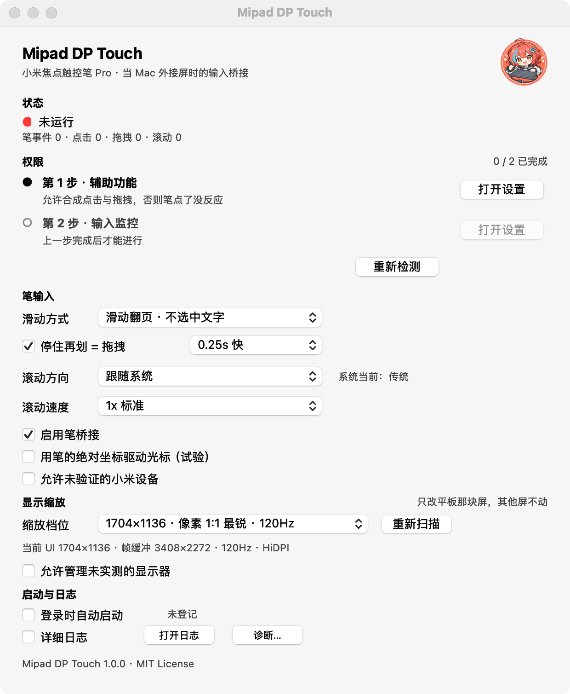

一根 USB-C 全功能线，一个被 macOS 漏掉的翻译层
平板接到 Mac 雷雳口就能当第二块屏（DP-in）。但接上之后，笔的表现取决于你装没装这个工具：
- 笔能移动光标，却点不动
- 点图标、点按钮毫无反应
- 窗口拖不动，文字也划不了选
- 轻点 = 鼠标左键
- 快速划动 = 翻页滚动，不误选文字
- 停住再划 = 拖拽：拖窗口、划选文字
- 停住不动 = 右键菜单
手指触控在 macOS 上暂时没有可行方案。
菜单栏常驻，随手可用
配置存在你自己的 ~/Library/Application Support/MipadDPTouch/config.json；菜单栏和设置窗口是同一份状态的两个表面，不会「菜单里勾着、窗口里没勾」。
🔍一键放大还不糊
原生分辨率字太小？切到 1704×1136（120Hz，像素 1:1 最清晰），只改平板那块屏，随时换回原档。
🚀开机自启
一个开关，登录后自动就绪；在「系统设置 → 通用 → 登录项」里可见、随时能关。
🧩零侵入、好卸载
不装驱动、不改系统文件；删掉 App 就等于卸载，配置和日志都在你自己的 ~/Library 下。
🎚手感可调
滑动方式、拖拽判定、长按时间、滚动方向与速度都能调，正在排查时可开详细日志。
🔐分步授权引导
① 辅助功能 ② 输入监控，上一步没完成下一步是灰的；TCC 生效要点「立即重启」。
📊事件计数
笔事件 / 点击 / 滚动 / 拖拽 实时计数，笔有没有反应一眼看出来。

能力一览
功能边界如实列出 —— 包括没做的那一项。
| 能力 | 状态 |
|---|---|
| 设备识别 | ✓ |
| 笔点击桥接 | ✓ |
| 笔拖拽（拖窗口、划选文字、拖滑块） | ✓ |
| 翻页滚动（一个鼠标键都不发，绝不误选文字） | ✓ |
| 停住再划 = 拖拽 | ✓ |
| 停住不动 = 右键菜单 | ✓ |
| 显示缩放 | ✓ |
| 开机自启 | ✓ |
| 手指触控 | ✗ 暂无可行方案 |
三步装好
系统要求 macOS 27（在 macOS 27.0 + Mac mini M4 实测；更老的系统未验证，报问题时请带上系统版本）。
-
下载安装包
在 Releases 里下载
Mipad-DP-Touch-1.0.0.dmg（约 13 MB）。 -
拖进「应用程序」并打开
打开 DMG，把 App 拖到「应用程序」，双击打开。装好约占 25 MB；想卸载，退出 App、删掉即可。
-
按提示分两步授权
① 辅助功能 → ② 输入监控。两项都 ✓ 后点「立即重启」。
然后用笔点一下图标 —— 能点开就成了。分步图文见 INSTALL.md。
⚠️ 首次打开被系统拦下（ad-hoc 签名，不是文件坏了）
推荐：打开「系统设置 → 隐私与安全性 → 安全性」，点被拦那条的「仍要打开」，再确认一次。或终端一行：
$ xattr -dr com.apple.quarantine "/Applications/Mipad DP Touch.app"
常见的几种情形
更多内容见 INSTALL.md。
想弹右键菜单
笔能点、能翻页，就是拖不动窗口 / 划不了选
笔点了没反应
更新完 App 就失效了
字太小 / 太糊
1704×1136（带「像素 1:1 最锐」标注）。别去系统设置里拉低分辨率，那样会糊。